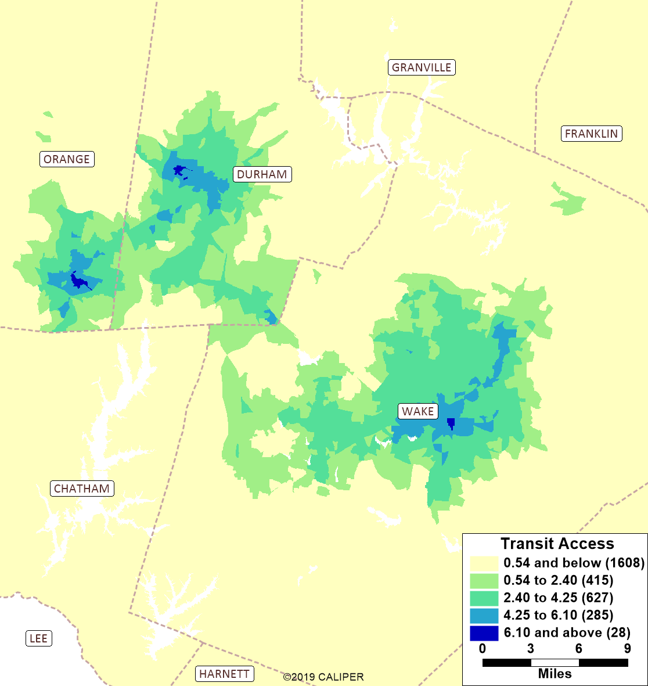
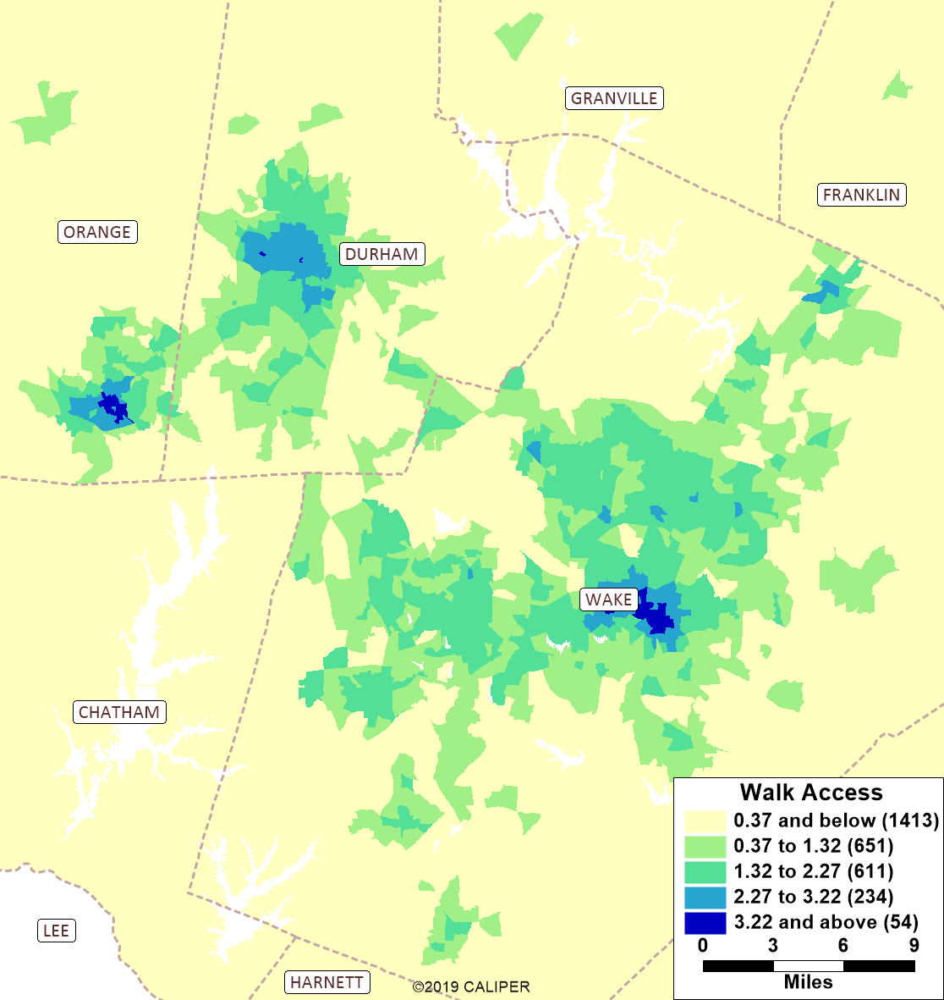
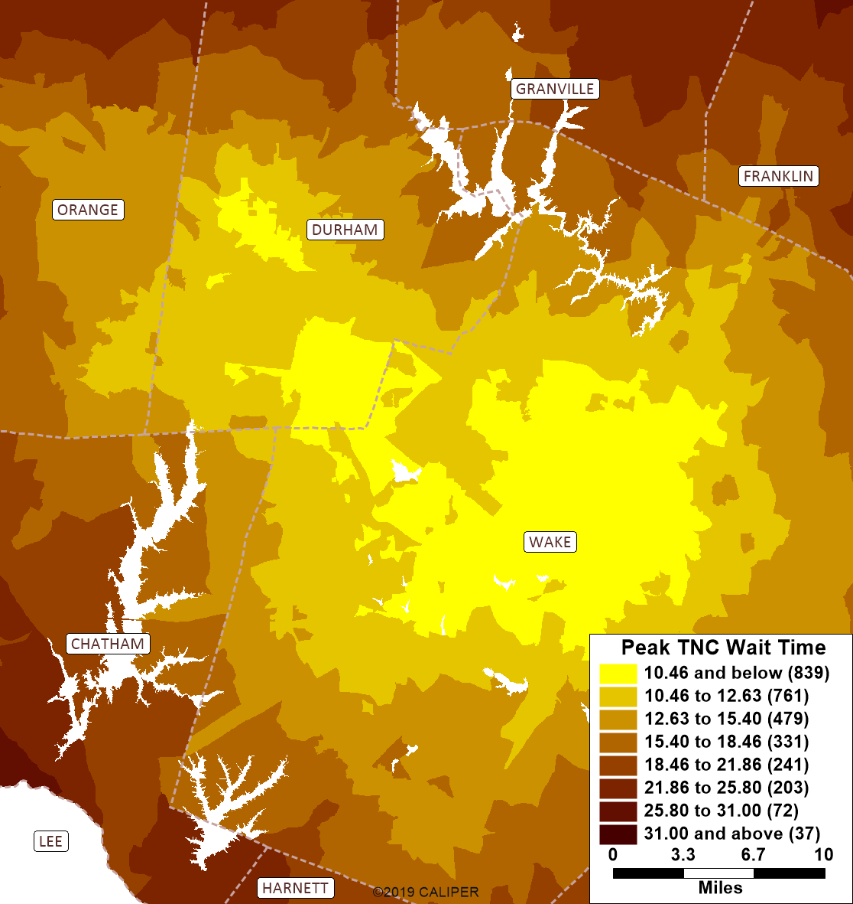

Accessibility
Introduction
Accessibility is a measure of a traveler’s ability to reach locations where they can engage in necessary and desired activities.
Accessibility can be measured in various ways and different measures are useful for different purposes. It is not uncommon for planners to use accessibility measures such as the number of jobs accessible within a 30 minute commute because measures such as this are readily understandable. However, metrics like this are not as good for analysis and modeling because they can exhibit significant discontinuities or “cliff-effects” where, for example, a large employer is 31 versus 29 minutes away. For this reason, in travel models, more continuous but sometimes less intuitive accessibility measures are used.
Another way accessibility can be measured, more similarly to the way it is commonly measured in models is the average cost (usually in terms of minutes) of a trip from a given location, perhaps for a particular purpose, by a particular mode, and/or at a particular time of day.
Accessibilities, thought of as the average or expected cost of a trip, affect many aspects of travel behavior and are therefore included in many components of behaviorally realistic advanced travel models. The average cost of trips (in miles) from a residence location clearly affects auto ownership because, for instance if most activity destinations can be reached within a mile, a car is not necessary. Residents of dense, highly-accessible areas also can afford to make more trips, because their trips are shorter on average, and so they can accomplish more trips in the same travel time budget. Thus, downtown dwellers make more, shorter trips than the regional average and rural residents make fewer, but longer trips. Although some older trip-based models partially reflected this through the stratification of trip generation rates by area type, the use of continuous accessibility variables in generation models is clearly preferable both in terms of statistical support and model response properties. To fully and accurately reflect this fundamental difference between travel patterns by residents of different parts of the region, accessibility must also be incorporated in destination choice. The accessibility of the home location scales residents’ willingness to travel (sensitivity to travel time) because when a person chooses their residence location, they are also choosing how far they are generally willing to travel. The accessibility of destinations is also a factor in destination choice because it measures the cost of an additional (non-home-based) trip from that location.
A number of accessibility measures are therefore used in the TRM to model these various effects of accessibility on travel behavior and patterns.
Maps
The maps below show the regional pattern of the various accessibility metrics used by the model. Below the maps, more detail on each metric is provided.
Approach Density

GS Index

Stop Proximity

Walkability

Transit Access

Walk Access

TNC Wait Time

Intersection Approach Density
Intersection approach density is an important measure of walk accessibility that does not require parcel level zones or place data. It is used as a component of a more comprehensive walkability (or walk accessibility) variable in the TRM. In the language of urban planning, it measures urban design.
Intersection approach density as a metric recognizes that dense, gridded street systems are more conducive to walking than sparse suburban development forms with many dead ends, cul-de-sacs, and three-way intersections. To calculate this metric, each node in the network was evaluated to determine how many (non-freeway) streets were connected to it (a minimum of three required to be an intersection). Each of these connected links is an “intersection approach”. Within each zone, the total number of these approaches was summed and then divided by the zonal area to arrive at a density which measures both the average block size or density and street network connectivity.
Gini-Simpson Index (D)
The Gini-Simpson Index is a diversity index used for measuring the diversity of many types of phenomenon in various social sciences (such as income and racial diversity). In the context of travel modeling and the TRM, the index is used to measure the diversity of land uses or degree of “mixed use” in a zone. In this way, it can be thought of as a type of intra-zonal accessibility measure.
Formally, the Gini-Simpson Index in this context is the probability that two places (trip ends or activities) within a zone (i) will belong to different types (g); where we have taken types simply as home, work, and other activities:
Stop Proximity
This is a common metric in travel models given its power at describing zonal accessibility to transit. In the TRMG2, the percent of each zone within 1/4 mile of a bus stop is computed using a GIS overlay in TransCAD. The map below zooms in to Apex to give an illustration of how this calculation works.

Walkability
For each zone, a binary choice model was applied to determine the propensity to walk for trips originating in that zone. Simple by design, it does not consider skims or other matrix-based attributes. Instead, it uses the metrics below to make predictions.
- Approach Density: Intersection approaches in zone divided by zonal area
- Attraction Density: Total attractions divided by zonal area.
- GS Index: Gini-Simpson Diversity Index
- Constant (walk): Constant applied to the walk utility equation
Adjusted rho-squared: 0.45
| Term | Coeff | T-Stat |
|---|---|---|
| Approach Density | 0.16 | 12.1 |
| Attraction Density | 0.23 | 24.8 |
| GS Index | 0.12 | 9.5 |
| Constant (walk) | -1.96 | -141.0 |
Logsum Accessibilities
Logsums can be considered as a weighted average accessibility. While logsums are most often discussed in relation to mode choice and destination choice models, the logsums used for these accessibility measures are based on a simpler gravity formulation as a proxy and to avoid endogeneity problems from simultaneously estimating destination choice models including logsums of those same and other destination choice models.
\[A_i = ln(\sum_j S_jt_{ijm}^{\beta}e^{\gamma t^{ijm}})\]
Where:
\(A_i\): Accessibility of zone i
\(t_{ijm}\): Travel time between zone i and j by mode m
\(S_j\): Attractions in zone j (size term)
Accessibility logsums are useful for many steps of the model. One example is the non-home-based production models. A non-home-based walk trip is more likely to occur in areas with high walk accessibility, and they are less likely in area with poor access.
The TRMG2 makes use of a fairly generic function for calculating multiple accessibility variables. The table below presents two as examples. The first four rows detail which skims, cores, and decay parameters to use. The remaining rows show the attraction rates for the size variable calculation.
| Param | access_general_sov | access_transit |
|---|---|---|
| skim | sov | transit |
| core | FFTime | Total Time |
| b | -0.93 | -2.05 |
| c | -0.09 | -0.06 |
| HH | 1.9 | 1.9 |
| K12 | 1.5 | 1.5 |
| StudGQ_NCSU | 5.7 | 5.7 |
| StudGQ_UNC | 5.7 | 5.7 |
| StudGQ_DUKE | 5.7 | 5.7 |
| StudGQ_NCCU | 5.7 | 5.7 |
| CollegeOn | 5.7 | 5.7 |
| CollegeOff | 5.7 | 5.7 |
| Retail | 18.7 | 18.7 |
| Service_RateLow | 5.6 | 5.6 |
| Service_RateHigh | 5.6 | 5.6 |
| Office | 3 | 3 |
| Industry | 3 | 3 |
TransCAD GIS Software, 2022